AÇIK, ENERJİK, KEŞFE AÇIK
Açık Atölye
Kareli zemin, sarı–mor başlıklar ve fotoğraf kolajı. Dört kapıdan seçilen programın detaylarına geçilen, sekmeli bir keşif deneyimi.
Açık Atölye'yi incele
DAHASI VAR!KAMPANYA TASARIM ÇALIŞMALARI
Kapadokya Üniversitesi'nin Yandal, Mikro Yeterlilik, SEM ve KÜN Kariyer kampanyaları için altı farklı tasarım. Her tasarımın program detayları ve çalışan bağlantıları sunuma dahildir.
AÇIK, ENERJİK, KEŞFE AÇIK
Kareli zemin, sarı–mor başlıklar ve fotoğraf kolajı. Dört kapıdan seçilen programın detaylarına geçilen, sekmeli bir keşif deneyimi.
Açık Atölye'yi inceleKOYU, SAKİN, FOTOĞRAF ODAKLI
Lacivert zemin, yeşil vurgular ve genişleyen fotoğraf panelleri. Programları büyük görseller ve dönüşümlü bölümlerle anlatan bir deneyim.
Gece Kampüsü'nü inceleAYDINLIK, EDİTORYAL, ZAMANSIZ
Büyük serif başlıklar, ince çizgiler ve geniş fotoğraflarla bir üniversite dergisi. Her program, hikâyene ekleyeceğin yeni bir sayfa.
Yeni Sayfa'yı inceleYEŞİL, GRAFİK, YÖN GÖSTEREN
Yeşil zemin üzerinde renkli program blokları. İlgi alanına göre yolunu seç, açılır program rehberiyle ayrıntıları keşfet.
Kendi Rotan'ı inceleKARELİ ZEMİN, RENKLİ ÇERÇEVELER, DÖRT KAPI
Fiziksel kapılardan ilham alan tasarım: metal kollu kapılar, program detayları, hedef kitle bilgileri ve başvuru soruları.
Dört Kapı'yı inceleLACİVERT, KEMERLİ, TAM EKRAN GİRİŞ
Büyük kampanya başlığı ve dört kemerli fotoğraf kapısı. Açılış animasyonunun ardından aynı sayfadaki program detaylarına geçilir.
Dört Kemer'i incele